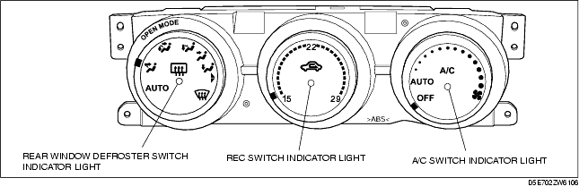

Troubleshooting ➭ HEATER, VENTILATION & AIR CONDITIONING ➭ DTC INSPECTION
DTC INSPECTION
id070200800200
-
Turn the ignition switch to the ON position, then press and hold the A/C switch for 5 s or more within 10 s.
-
Verify that all the indicator lights of the climate control unit illuminate.

Malfunction detection function
- Shine a 60 W incandescent light from a distance of approx. 100 mm vertically to the solar radiation sensor.
• If incandescent light is not shone on the solar radiation sensor, the climate control unit determines that there is a malfunction
-
Turn the ignition switch to the ON position, then press and hold the A/C switch for 5 s or more within 10 s.
• If the system is normal, the A/C switch indicator light illuminates.
Door position check function
-
Turn the ignition switch to the ON position, then press and hold the A/C switch for 5 s or more within 10 s.
-
Verify that the indicator light of the climate control unit illuminates.
Operation check function
-
Turn the ignition switch to the ON position, then press and hold the A/C switch for 5 s or more within 10 s.
-
Turn the fan switch to a position other than OFF, AUTO, or LO positions.
-
Verify the operation of each output related part by switching the mode dial positions while referring to the operation check table.
• If there is any malfunction, inspect the malfunctioning system.